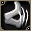
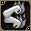
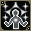
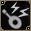
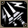

- HP
- 20,000
- Lv
- 99
- AC
- 50
- MC
- 30
- AAR
- -60
- SAR
- -60
- 經驗值
- 1200
- 名聲值
- 1000
- 金錢
- 200
- 攻擊屬性
- 暗黑
- 防禦屬性
- 不死
- STR
- 3
- DEX
- 3
- INT
- 200
- WIS
- 200
- CON
- 200
混沌 黑暗 噴射之燄 混亂無效
掉落物品
 惡魔島入場券
惡魔島入場券
戰:打擊、斬擊、 鎚擊、月斬、光環盾、見切、強力打擊、烈焰斬、光環斬、雙重打擊、燕返、王者之風、忿怒之擊、坦克之甲、戰士之殼、狂戰士之怒、威力攻擊,居合斬、能量劍
鎚擊、月斬、光環盾、見切、強力打擊、烈焰斬、光環斬、雙重打擊、燕返、王者之風、忿怒之擊、坦克之甲、戰士之殼、狂戰士之怒、威力攻擊,居合斬、能量劍
修:正拳、踢擊、閃電拳、 自我治癒、螺旋拳、下劈踢、模仿凝視、連擊、
自我治癒、螺旋拳、下劈踢、模仿凝視、連擊、

機關槍踢、鋼之肉體、
火焰拳、大地之怒、艾尼米雷松、
練氣法、強力蘭巴賊:突刺、 挖刺、自我治癒、
挖刺、自我治癒、 沙彈、毒、鑑定術、
沙彈、毒、鑑定術、 雙重刺擊、溫德維克、
雙重刺擊、溫德維克、 屬性確認、
屬性確認、 小丑波克、胡椒炸彈、內特瑪那(No.1&2)、
小丑波克、胡椒炸彈、內特瑪那(No.1&2)、 雙重抓擊、托克辛、隱形、鞭擊(技能捲軸)、布里茲維克、
雙重抓擊、托克辛、隱形、鞭擊(技能捲軸)、布里茲維克、 亂刺、偵測、鐵鞭、蜘蛛網(技能捲軸)、大師暗影
亂刺、偵測、鐵鞭、蜘蛛網(技能捲軸)、大師暗影
聖:自我治癒、普雷多恩、哈沃克之石(No.1)、解毒術、 聖蟲、聖視、初級治癒、護盾術、
聖蟲、聖視、初級治癒、護盾術、 普雷亞、治癒、岩膚、救援術、復活、
普雷亞、治癒、岩膚、救援術、復活、 本阿莫里、體力祝福、技能祝福、復仇之靈、魔力救援、
本阿莫里、體力祝福、技能祝福、復仇之靈、魔力救援、 恢復、逆轉、技能救援、
恢復、逆轉、技能救援、 超級恢復術、淨化烈焰、大逆轉術、高級救援術、聖者的呢喃、聖者的箴言、聖者之能、聖者之風、恢復行走、火焰下降、
超級恢復術、淨化烈焰、大逆轉術、高級救援術、聖者的呢喃、聖者的箴言、聖者之能、聖者之風、恢復行走、火焰下降、 恩典、聖幻、復活術、究級復活術
恩典、聖幻、復活術、究級復活術
魔:火箭術、冰箭術、風箭術、散沙、自我治癒、火球術、風刃、滾動岩球、單體雷擊、火焰碎片、冰槍術、雷球術、岩彈術、 冰柱雨、火牆術、爆裂波、風藤、烈焰爆發、最後之刃(No.1)、
冰柱雨、火牆術、爆裂波、風藤、烈焰爆發、最後之刃(No.1)、 燃燒死亡、
燃燒死亡、 擊中打擊(魔法書)、冰螺旋、屬性賦予(技能書)、魔法之門、快速施法、火焰風暴、十字單體雷擊、強力衝擊、寒凍冰霜、流星術、高速施法、
擊中打擊(魔法書)、冰螺旋、屬性賦予(技能書)、魔法之門、快速施法、火焰風暴、十字單體雷擊、強力衝擊、寒凍冰霜、流星術、高速施法、 冰凍流血、夢饜的詛咒、夢饜的箴言
冰凍流血、夢饜的詛咒、夢饜的箴言
騎:突刺之槍、 騎士治癒、指揮、
騎士治癒、指揮、 龍鱗、爆裂灰、騎士榮耀、穿刺之身、
龍鱗、爆裂灰、騎士榮耀、穿刺之身、 哈沃克衝擊、
哈沃克衝擊、 騎士獨特、
騎士獨特、 戰術、雷霆之槍
戰術、雷霆之槍
吟:枷鎖之歌、吟遊治癒、提升能力、庇祐紋章、玫瑰之歌、

吟遊噪音、向日葵之歌、大海之歌、暴動之歌、玫瑰之旋律、 支援者、大海之旋律、保護、向日葵之旋律
支援者、大海之旋律、保護、向日葵之旋律阿:克萊茲、費爾克萊茲、 丘奧克萊茲、
丘奧克萊茲、 佛洛英戴爾、
佛洛英戴爾、 圖那英戴爾、
圖那英戴爾、 梅爾特英戴爾、
梅爾特英戴爾、 卡塔爾西克爾、卡姆爾索瑪、
卡塔爾西克爾、卡姆爾索瑪、 阿斯蘭西克爾、
阿斯蘭西克爾、 克洛克迪卡普瑪、
克洛克迪卡普瑪、 內拉、福加、
內拉、福加、 塞斯、
塞斯、 費亞爾、安特拉、蓋特、達姆德
費亞爾、安特拉、蓋特、達姆德
預:阿雷特、 簡單攻擊、
簡單攻擊、

鎮定攻擊、巴雷斯特拉、 重型巴雷斯特拉、克羅伊茨、多重舉起、冰柱洗牌、大地洗牌、赤紅鳳凰、遊行、防禦攻擊、進攻攻擊、彪馬召喚
重型巴雷斯特拉、克羅伊茨、多重舉起、冰柱洗牌、大地洗牌、赤紅鳳凰、遊行、防禦攻擊、進攻攻擊、彪馬召喚